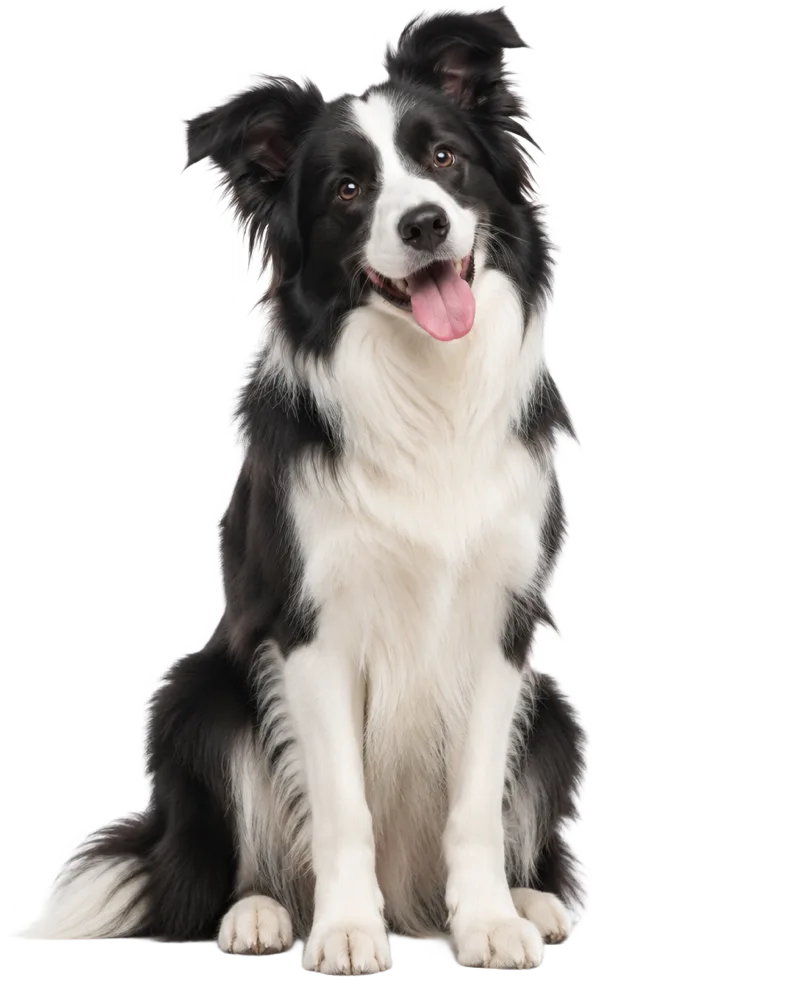
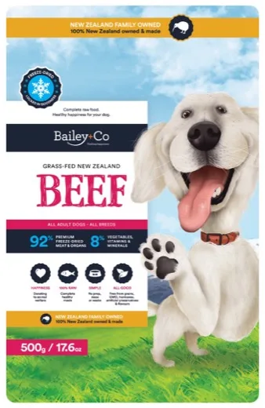
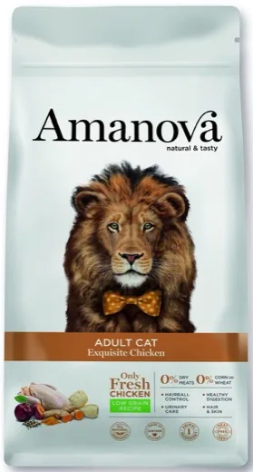
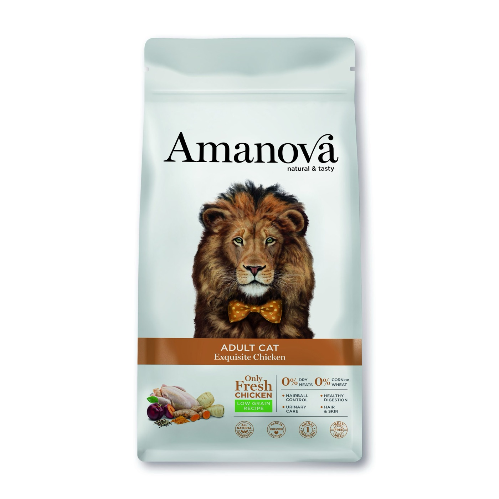

Leading the way in pet wellness
Premium food, treats and supplements for dogs and cats, from Amanova, Australian Pet Organics, Bailey + Co and Pets Journey.
4 brands
Food, treats and supplements for dogs and cats



Pick your pack size Bailey + Co beef in 0.5, 1.2 and 3.6 kg
Four specialist brands
Amanova, Australian Pet Organics, Bailey + Co and Pets Journey in one place.
Dog and cat ranges
Shop by pet to see only what suits your dog or your cat.
Pick your pack size
Choose the size that fits, like Bailey + Co beef in 0.5, 1.2 or 3.6 kg.
Food, treats and supplements
From complete raw diets to joint support for older dogs.
Shop by brand
Shop by pet
Featured · Bailey + Co
NZ Grass Fed Beef Freeze Dried Diet
Complete raw food for all adult dogs, all breeds.
- 92% premium freeze-dried meat and organs
- 8% vegetables, vitamins and minerals
- 100% raw, no prep, no mess
- Free from grains, GMO, hormones, artificial preservatives and flavours
3 pack sizes0.5 kg1.2 kg3.6 kg
Choose your sizeFrom the catalogue
- Bailey + CoNZ Grass Fed Beef Freeze Dried DietComplete raw food for all adult dogs, all breeds.0.5 kg1.2 kg3.6 kg

AmanovaAmanova Cat Adult Chicken 1.5 kgAdult cat food made with fresh chicken. Low grain recipe.Single size Bailey + CoAdvanced Joint SupplementNew Zealand green-lipped mussel powder. Great for older dogs.Single size
Bailey + CoAdvanced Joint SupplementNew Zealand green-lipped mussel powder. Great for older dogs.Single size